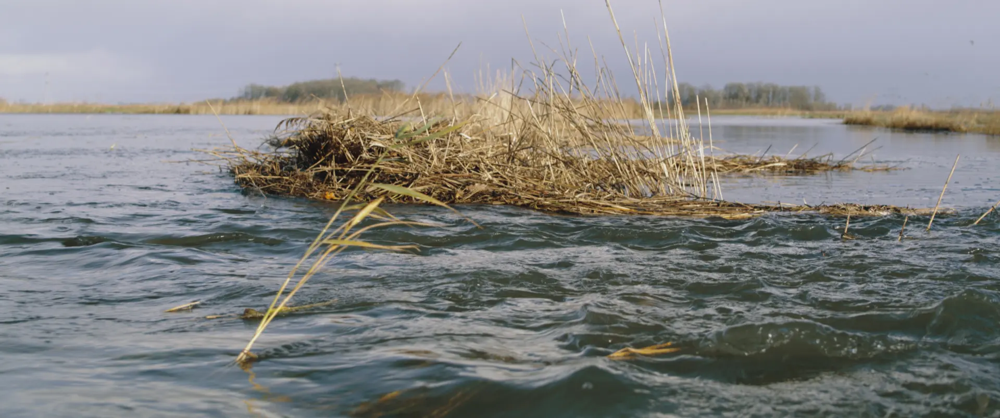

De Biesbosch: Natuur in beweging
- Jaar
- 2024
- Duur
- 90 minuten
- Verteller
- Jacques van der Neut
- Nu te zien
- Pathé Thuis
Het leven in een zoetwatergetijdengebied dat uniek is op wereldschaal. Bevers, zeearenden en ijsvogels, en het verhaal van hoe de Biesbosch van productielandschap uitgroeide tot nationaal park.
- Wereldpremière op het Wildlife Film Festival Rotterdam, 5 november 2024, en genomineerd voor beste onafhankelijke productie.
- Van november 2024 tot maart 2025 te zien in filmtheaters door het hele land en in alle Vue-bioscopen.
- Kristallen Film van het Nederlands Film Festival voor meer dan 10.000 bezoekers.